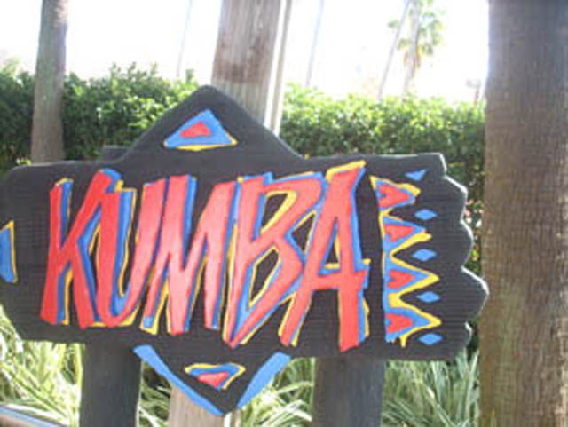
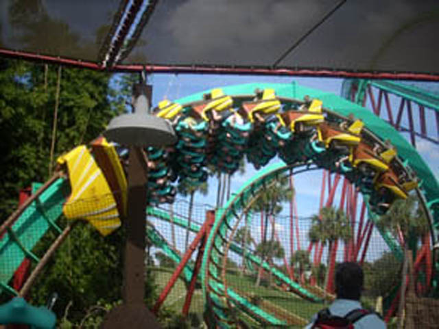

| |
Kumba Review

Today at Busch Gardens Tampa, we'll be reviewing Kumba for you. After getting in the trains and pulling down the OTSRs, we are off. We roll through a small turn and then it's up the lifthill we go. And just like Riddlers Revenge back on the West Coast, Kumba's lifthill also threads the loop. So that's cool. Oh yeah. Here's a brief tip for you. Don't open your mouth on the lifthill of Kumba. I know on one of our rides, there was a big swarm of bees just hovering up above the lifthill. That was pretty scary alone due to the fear of getting stung by a whole swarm of bees, but to have your mouth open during that time would simply not be a smart idea. Eventually, we reach the top of the lifthill and it's off into the first drop we go. We twist to the left and drop. As we turn, we speed builds and builds. Once we reach the bottom of the drop, we are flying at full speed. And on Kumba, we won't be slowing down anytime soon. Then we roar up into the vertical loop. For a brief second, you can look down on the lifthill and be upsidedown at the same time! But Kumba doesn't dilly dally in it's inversions and will bring you back down soon and fast. So you won't be getting any hangtime on this ride. Then after roaring straight through the loop, we fly straight into the dive loop. We then flip head over heels just to dive right back down to the ground. The ride is so fast you don't even appreciate the setting Kumba has. Then we head into the best part of the ride. The Heartline Spin. And this isn't just the best part of Kumba, this is the best heartline spin on EVERY ROLLERCOASTER I HAVE EVER RIDDEN!!! And that's saying a lot since I've been on a lot of badass heartline spins. After rising up to the heartline spin, you get WHIPPED through it. I know on one of my Kumba rides, I was riding Kumba Superman Style. And when we went through the heartline spin, I literally felt my arm move around my socket. I literally thought Kumba was going to take my arm out of it's socket!! Now THAT'S a powerful Heartline Spin. After diving back to the ground, we roar through a slight turn straight track combo before soaring straight into the Cobra Roll. We rise up, quickly twist out of it, before twisting back upsidedown and roaring straight under a bridge. And it's not that graceful on Kumba. Kumba will do it with a sh*tload of force. We then twist up into the midcourse brakes. However, the midcourse brakes are an epic failure as we just roar right through then and dive straigt back down in the course. We then fly through a corkscrew with quite a bit of force. We then roar through a turn before whipping us straight through corkscrew #2. While the inversions on Kumba may end at this point, Kumba is still roaring on and roaring strong. We then rise up through a small hill before twisting back down into a tunnel. We fly through the tunnel and even bank to the right before flying right out of the tunnel and into a ground hugging helix. We shred through the helix as if it were a picture of our worst enemy. But after that, it sadly all comes to an end as we finally slow down to the brake run. While Kumba may be 27 years old, it still packs one hell of a punch and proves itself to be not only the best coaster at Busch Gardens Tampa, but one of the best coasters Incrediblecoasters has ridden of all times. I would HIGHLY recommend riding Kumba if you are EVER at Busch Gardens Tampa. You will not be dissapointed (That is, unless you have forceaphobia).
9/10
Location: Busch Gardens Tampa
Opened: 1993
Built by: B&M
Last Ridden: November 19, 2007

Kumba Photos





Home
|